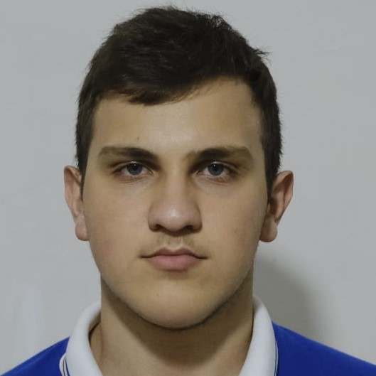
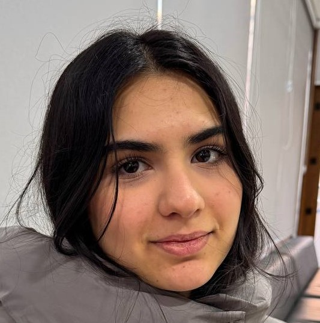
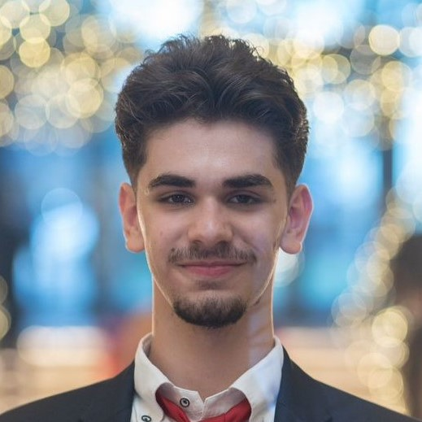
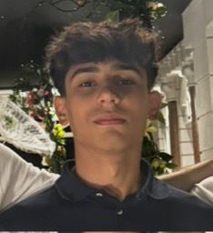

Ravan Sadigzade
My name is Ravan Sadigzade,l am freshman at ADA.l graduated from "FRITL". l have won gold medal from republic math olympiad. Here,in ADA, l hope to broaden my knowledge. Codeacademy profile

Fatima Baghirli
My name is Fatima Baghirli. I received my secondary education at school No.200. This year I was admitted to ADA University Bachelor of Science in Information Technology with my SAT and Duolingo test results. My primary goal is to major in Information Technology, benefit from the academic excellence and resources provided by ADA University to achieve both personal and professional growth in the field. Codeacademy profile
 Ibrahim Suleymanzade
My name is Ibrahim, and I am a proud member of Team 51. I completed my earlier education at the esteemed 132-134 Education Complex, where I developed a strong academic foundation. Motivated by a passion for technology, I chose to pursue higher education at ADA University, gaining admission through my successful performance in the SAT exams, where I achieved an impressive score of 1400. Currently, I am specializing in Information Technology, where I am eager to deepen my expertise and contribute to the field. Codeacademy profile

Elnur Nasibli
My name is Elnur Nasibov, and I studied at Dünya School, where I completed the International Baccalaureate (IB) program starting in 6th grade. After studying in IB for 6 years I got score of 31 on the IB exam,which is really good. Currently, I am studying in ADA university and my major is Computer Science . My goal is to become a computer. programmer in future Codeacademy profile